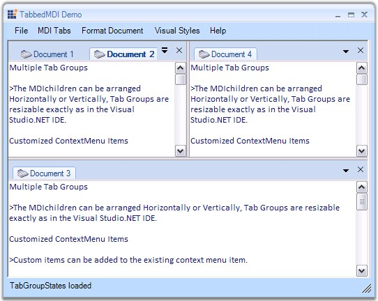

The TabbedMDI package provides a new TabbedMDI layout mode (as an alternative to the default Cascade and Tiled modes), popularized by Visual Studio .NET. This framework was built with great consideration for ease of use, to avoid having to modify an existing MDI application in any way to enable the TabbedMDI mode. With a single method call, you can switch between TabbedMDI and RegularMDI layout modes.

Figure 1082: TabbedMDI Framework
TabbedMDI framework will retain the MDI scheme in Tabbed mode. The Child forms will still be MDIChildren of the Parent (they will not be moved into a TabControl; this results in loss of MDI functionality like Merged Menus, switching using CTRL+TAB, etc.), thereby enhancing your application without interfering with the general MDI scheme.
The TabbedMDI framework provides users the exact functionality and look and feel of Visual Studio .NET Tabbed Child windows.
 Features Overview
Features Overview